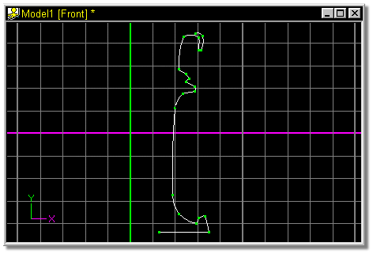
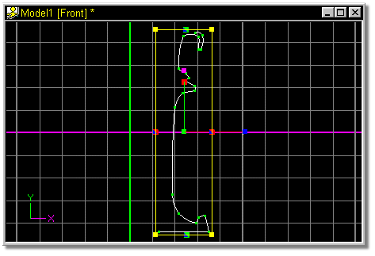

Click any control point on this spline to select it, and press the “/” key to
Group Connected.

Figure 4
Click the Scale Manipulator button to access a manipulator mode that allows pivot translation.
The screen should look similar to figure 5.

Figure 5